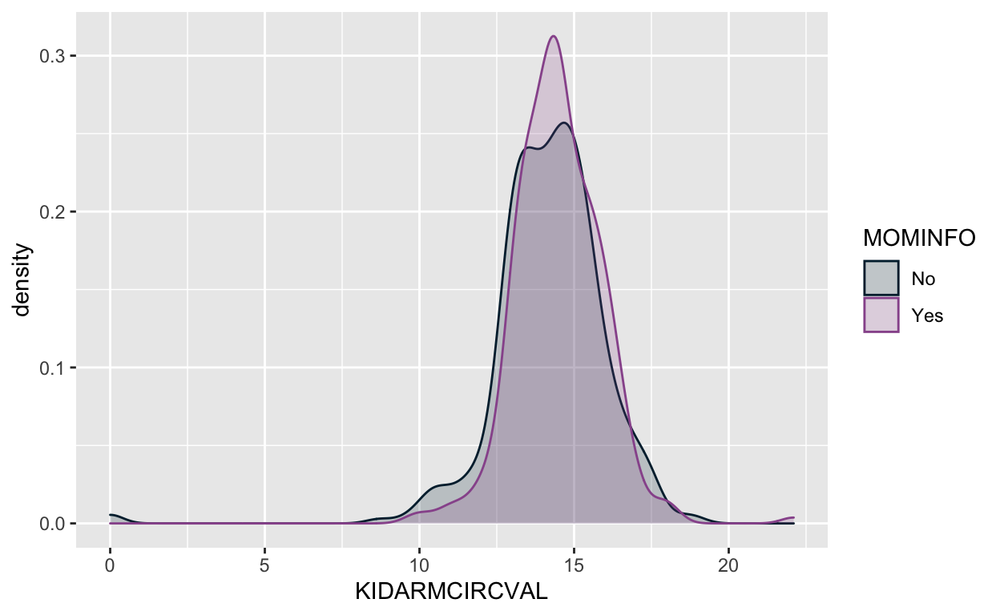

How to build a rowwise function linking children to mothers in the 2018 Nutrition Surveys for Burkina Faso and Kenya.
The PMA 2018 nutrition survey module for Burkina Faso and Kenya contains hundreds of indicators measuring diet and nutritional status for women aged 10-49 and children under age 5. In some households, the 2018 survey design included both children and their biological mother, but their relationships are not immediately available in the data.
This post shows how to write an R function that will link child and maternal records, provided that both mother and child were surveyed. These links may be particularly useful for researchers studying the effectiveness of different antenatal interventions on early childhood nutrition.
For example, we’ll examine a variable RPFEEDINFO that asked mothers whether they ever received information about how to feed their newborn during an antenatal care visit for their recent pregnancy. This information is stored only in the row containing the mother’s record, but - if we can successfully link a mother to her child - we’ll then attach it to the row containing the child’s record. Then, we’ll be able to compare it with a measure of the now-living child’s growth KIDARMCIRCVAL to see whether children whose mother received the antenatal intervention have fared better in the first years of life.
To run the code in this post, you’ll need the tidyverse package from CRAN. See our post Installing and Loading Useful R Packages for help.
To keep things simple, we’ll focus on 2018 Nutrition data from Burkina Faso, which you can download at pma.ipums.org. See our post Downloading an IPUMS Extract for R for help.
bf2018 <- ipumsr::read_ipums_micro(
ddi = "pma_00001.xml",
data_file = "pma_00001.dat.gz"
)
The easiest way to match mothers and children is to look within each household for a child whose date of birth KIDBIRTHYR and KIDBIRTHMO matches the birth record data for any women living in that same household. The 2018 Nutrition survey only contains dates for each woman’s most recent birth in LASTBIRTHYR and LASBIRTHMO, so we can only match a mother to her most recent child.
While this approach won’t match every mother and child, we can safely assume that we’ve found a correct pair in each household if we also make sure that the birthdates allow for only one possible match. For example, if two women in the same household last gave birth in the same month and year, we should make sure to exclude them (since we wouldn’t be able to tell which mother matches which child).
bf2018 <- bf2018 %>%
group_by(HHID) %>%
mutate(MOMID = case_when(ELIGTYPE < 20 ~ pmap_chr(
cur_data() %>%
select(KIDBIRTHYR,
KIDBIRTHMO,
LASTBIRTHYR,
LASTBIRTHMO),
function(...){
kid <- tibble(...)
sameYr <- which(LASTBIRTHYR == kid$KIDBIRTHYR)
sameMo <- which(LASTBIRTHMO == kid$KIDBIRTHMO)
mom <- intersect(sameYr, sameMo)
if(length(mom)==1){return(PERSONID[mom])}else{return(NA)}
}
))) %>%
ungroup()
We create a variable MOMID that stores the unique person identifier PERSONID for each child’s mother.
To find each child’s mother, we restrict our search to individuals living in the same household (group_by(HHID)). Then, using ELIGTYPE we assign MOMID only to child records by selecting cases where ELIGTYPE < 20.
Then, for each child in the household, we use the pmap_chr() function to examine each of the records for individuals who live with the child. For sake of speed, we pass only the variables KIDBIRTHYR, KIDBIRTHMO, LASTBIRTHYR, and LASTBIRTHMO to the anonymous function inside pmap_chr.
Finally, kid <- tibble(...) stores a temporary one-row data frame containing information on the child, which we can then reference with kid$BIRTHYR and kid$BIRTHMO. As pmap_chr iterates through each household member, it assigns mom to any person who gave birth on the child’s birthday. If only one person fits, that person’s PERSONID becomes the child’s MOMID.
In total, 796 children were linked to a mother: this is only about 28% of the 2856 children listed by the grouping variable ELIGTYPE:
bf2018 %>% count(ELIGTYPE, HASMOMID = !is.na(MOMID))
# A tibble: 9 x 3
ELIGTYPE HASMOMID n
<dbl+lbl> <lgl> <int>
1 11 [Infant under age 2 (INF)] FALSE 731
2 11 [Infant under age 2 (INF)] TRUE 463
3 14 [Aged 2-5 (K)] FALSE 1329
4 14 [Aged 2-5 (K)] TRUE 333
5 20 [Selected women aged 10-49 (WN)] FALSE 2411
6 31 [Member of household included in nutrition sample] FALSE 9045
7 32 [Member of household excluded from nutrition samp… FALSE 3535
8 95 [Not interviewed (female questionnaire)] FALSE 51
9 96 [Not interviewed (household questionnaire)] FALSE 101Why were so few children matched successfully? Part of the answer has to do with the nutrition sample design: in Burkina Faso, women aged 10-49 were included from just 45% of households selected at random from the household screening sample (in the Kenya 2018 sample, 25% of households were randomly selected). As a result, we might estimate that only around 45% of children could possibly be linked to mother included in the nutrition sample:
bf2018 %>%
mutate(MOMS_IN_HH = case_when(ELIGTYPE < 20 ~ pmap_chr(
cur_data() %>%
select(HHID, ELIGTYPE),
function(...){
kid <- tibble(...)
sameHH <- which(HHID == kid$HHID & ELIGTYPE == 20)
if(length(sameHH)>0){return("yes")}else{return("no")}
}
))) %>%
group_by(ELIGTYPE, MOMS_IN_HH) %>%
count()
# A tibble: 9 x 3
# Groups: ELIGTYPE, MOMS_IN_HH [9]
ELIGTYPE MOMS_IN_HH n
<dbl+lbl> <chr> <int>
1 11 [Infant under age 2 (INF)] no 655
2 11 [Infant under age 2 (INF)] yes 539
3 14 [Aged 2-5 (K)] no 924
4 14 [Aged 2-5 (K)] yes 738
5 20 [Selected women aged 10-49 (WN)] <NA> 2411
6 31 [Member of household included in nutrition samp… <NA> 9045
7 32 [Member of household excluded from nutrition sa… <NA> 3535
8 95 [Not interviewed (female questionnaire)] <NA> 51
9 96 [Not interviewed (household questionnaire)] <NA> 101This confirms our estimate: only 1277 of the 2856 sampled children live in a household with a woman aged 10-49 who was also included in the nutrition sample. In other words, 45% of sampled children live in a household with a sampled mother. Our search found matches for 28% of all children, but this reflects 62% of the children who live in a household with a sampled mother.
Fortunately, because households were randomly selected for the female nutrition sample, we should have no reason to suspect that the 796 children matched to mothers by our search criteria represent a biased sub-sample of the 2856 children overall. However, before proceeding with further analysis, it would be worthwhile to see if we can increase the number of linked children with additional search criteria.
In the example above, the use of LASTBIRTHMO and LASTBIRTHYR ensured that only mother’s most recent child could be linked to her record.
It’s possible to expand these criteria in certain circumstances using RELATEKID, which describes the relationship between each child and the person who provided responses to the interviewer on their behalf.
When RELATEKID == 1, the respondent to the child’s questionnaire is the child’s mother. So, if RELATEKID == 1 and if only one woman in the child’s household has ever given birth, we could reasonably identify that person as the child’s mother.
bf2018 <- bf2018 %>%
group_by(HHID) %>%
mutate(MOMID = case_when(
ELIGTYPE < 20 ~ pmap_chr(
cur_data() %>%
select(
KIDBIRTHYR,
KIDBIRTHMO,
LASTBIRTHYR,
LASTBIRTHMO,
RELATEKID
),
function(...){
kid <- tibble(...)
sameYr <- which(LASTBIRTHYR == kid$KIDBIRTHYR)
sameMo <- which(LASTBIRTHMO == kid$KIDBIRTHMO)
mom <- intersect(sameYr, sameMo)
moms_in_hh <- which(LASTBIRTHYR < 9000)
if(length(mom) == 1){
return(PERSONID[mom])
}else if(length(moms_in_hh) == 1 & kid$RELATEKID == 1){
return(PERSONID[moms_in_hh])
}else{
return(NA)
}
}
)
)) %>%
ungroup()
This is the same function as before, but with one major addition. We count all of the women in the child’s household who have ever given birth moms_in_hh. If our previous method doesn’t identify the child’s mother, we then look to see if there’s only one mother in the household length(moms_in_hh) == 1 and if the respondent for the child’s questionnaire was their mother kid$RELATEKID == 1.
With these expanded search criteria, 1079 children were matched to a mother’s record: an improvement by 283 cases!
bf2018 %>% count(ELIGTYPE, HASMOMID = !is.na(MOMID))
# A tibble: 9 x 3
ELIGTYPE HASMOMID n
<dbl+lbl> <lgl> <int>
1 11 [Infant under age 2 (INF)] FALSE 688
2 11 [Infant under age 2 (INF)] TRUE 506
3 14 [Aged 2-5 (K)] FALSE 1089
4 14 [Aged 2-5 (K)] TRUE 573
5 20 [Selected women aged 10-49 (WN)] FALSE 2411
6 31 [Member of household included in nutrition sample] FALSE 9045
7 32 [Member of household excluded from nutrition samp… FALSE 3535
8 95 [Not interviewed (female questionnaire)] FALSE 51
9 96 [Not interviewed (household questionnaire)] FALSE 101Because only 1277 children in the nutrition sample live with a sampled mother, we have now established almost 85% of the possible links between mothers and children.
However, these additional 283 cases should be used with some degree of caution: they represent children from smaller households compared to the remaining 15% ofchildren who, for the most part, live in households where more two or more mothers reside together. Further analysis should determine whether and how the selection of these smaller households might bias the social and economic composition of our sub-sample.
Now that we’ve linked as many children as possible to their mother’s records, we can create a new variable MOMINFO on the child’s record indicating whether their mother received newborn feeding information as a part of antenatal care during the pregnancy. We’ll get this information from RPFEEDINFO on the mother’s record.
We’ll then take each child’s mid-upper arm circumference KIDARMCIRCVAL as a simple proxy measure for growth and nutrition. Comparing children whose mothers received newborn feeding information to those whose mothers received none, no real difference seems to exist (at least not without additional control variables):
x_lab <- "Child's mid-upper arm circumference (MUAC)"
legend_lab <- str_wrap(
"Mother received newborn feeding information during antenatal care",
15
)
bf2018 %>%
filter(!is.na(MOMID)) %>%
rowwise() %>%
mutate(MOMINFO = bf2018$RPFEEDINFO[which(bf2018$PERSONID == MOMID)]) %>%
filter(MOMINFO %in% 0:1 & KIDARMCIRCVAL < 90) %>%
mutate(MOMINFO = as_factor(MOMINFO)) %>%
ggplot(aes(KIDARMCIRCVAL, color = MOMINFO, fill = MOMINFO)) +
geom_density(alpha = 0.2) +
scale_color_manual(values = c("#00263A", "#98579B")) +
scale_fill_manual(values = c("#00263A", "#98579B")) +
labs(x = x_lab, color = legend_lab, fill = legend_lab)

Or course, much more could be done to investigate the relationship between antenatal interventions and the growth of young children. Let us know what you uncover by linking mothers to children in the 2018 nutrition data!